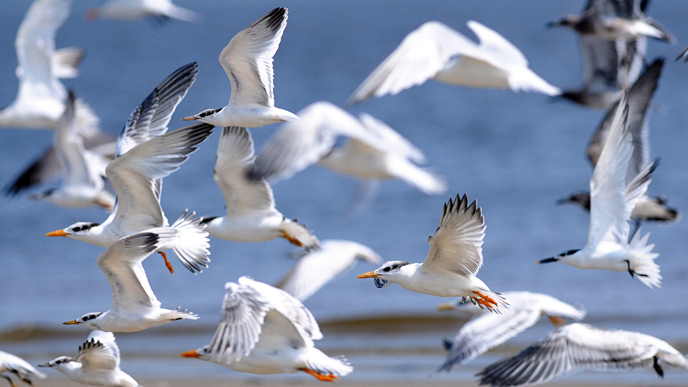
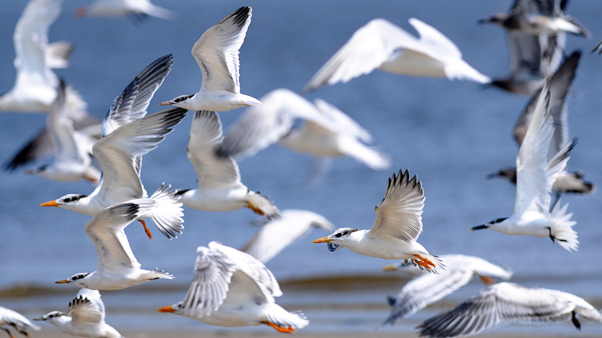

| Albatrosses |
Emperor Penguin |
Sea Birds |
| The albatrosses are a family of large sea birds. Both "great albatrosses", the wandering albatross and royal albatross, have wingspans of up to 3.4 meters (11 feet)—the largest of any living bird. |
The emperor penguin is the largest and heaviest species of penguin, growing up to 1.2 meters (4 feet) tall. It is the only species of penguin to breed during the Antarctic winter. |
About 300 species of birds live on or near the ocean, feeding on fish and other marine life. They include penguins, skuas, gulls, guillemots, terns, puffins, auks, skimmers, albatrosses. |
| Their wings are narrow and can lock in one position, enabling the birds to soar on ocean winds for days at a time, using little energy to cover great distances. |
The male protects the egg on top of its feet throughout the coldest months of winter while the female goes off to feed. Graceful swimmers, emperors gets about on the ice by sliding on their bellies. |
Some kinds dive into the water from the air, or from high rocks. Others skim over the surface, scooping up food. |
| Albatrosses have strong, hooked beaks, well-designed for catching their prey. They also have large, raised nostrils on the top of their beaks. |
The emperor penguin's feathers, together with a thick layer of fat under its skin, provide most of the protection it needs from the cold. Muscles hold the feathers erect when on land, trapping a layer of air next to the skin, giving additional insulation. |
Many sea birds gather in large colonies to breed, often laying just one egg. |
 
